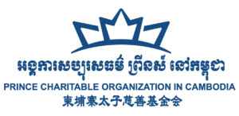

太子慈善机构
以秒计时
太子慈善机构是由太子地产集团有限公司创办的，集团业务涉及房地产、基础设施、物流、互联网、金融、航空运输和农业等多个领域。 该机构的一个关键理念是 “构筑美好生活”，他们通过慈善事业来实现这一目标。他们慷慨的捐款和成果证明着他们为企业社会、 公共福利的责任做出的贡献，以及实现促进社会和谐的承诺。因此，资助职业教育是他们在柬埔寨已经广泛开展的慈善工作。

太子慈善机构是由太子地产集团有限公司创办的，集团业务涉及房地产、基础设施、物流、互联网、金融、航空运输和农业等多个领域。 该机构的一个关键理念是 “构筑美好生活”，他们通过慈善事业来实现这一目标。他们慷慨的捐款和成果证明着他们为企业社会、 公共福利的责任做出的贡献，以及实现促进社会和谐的承诺。因此，资助职业教育是他们在柬埔寨已经广泛开展的慈善工作。